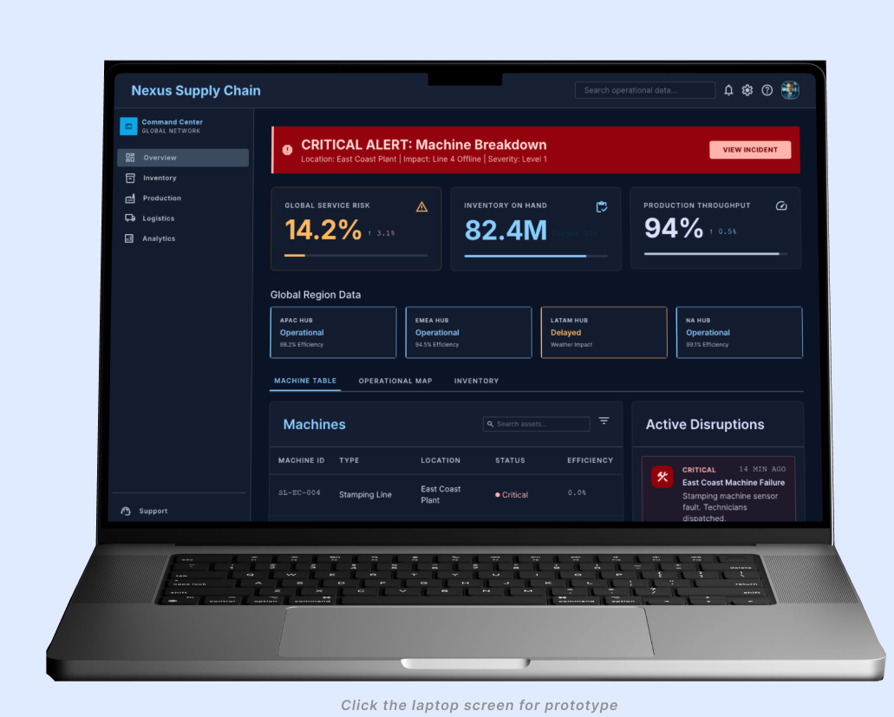

Nexus Supply Chain: Machine Breakdown Response Strategy
Comprehensive analysis of platform capabilities and strategic response frameworks for CPG manufacturing environments.
System Risks in CPG Manufacturing
Delayed response to critical machine failures leads to exponential downstream service level degradation.
Asset health and planning data are disconnected, preventing automated impact assessment.
Critical notifications rely on manual escalation chains, resulting in average 4-hour response gaps.
"The inability to synchronize maintenance schedules with supply commitments represents the single largest operational vulnerability in our current SCM architecture."
Robert
Supply Chain Manager
Elena
Logistics Manager
Sarah
Production Manager
Kennedy
Procurement Specialist
Key Insights
The core friction exists between maintenance execution and supply orchestration, where data transit time exceeds the window for effective recovery action.
Detection & Alert
"Alarm fatigue, high stress from sudden noise."
Manual logging required across three screens.
IoT-triggered unified notification system.
Impact Assessment
"Uncertainty about order priority."
No live link to Customer Orders.
Automated order-risk heatmap generation.
Collaborative Action
"Information overload from multiple calls."
No central source of truth for the plan.
Embedded war-room collaboration tools.
Decision Execution
"Reluctance to commit to changes."
Fear of negative downstream impacts.
What-if simulation capability.
Monitoring & Recovery
"Exhaustion, fear of recurrence."
Post-mortem reporting takes 2 days.
Automated RCA and recovery reports.
Event Detection
Visible on: Dashboard & MobileUnderstanding Severity
Visible on: Incident ModuleEffective Team Collaboration
Visible on: Shared WorkspaceComprehensive Problem Analysis
Visible on: Insight EngineMaking Right Decisions
Visible on: Scenario PlannerCreating Detailed Report
Visible on: Compliance CenterReal-time disruption response for CPG operations
The product connects machine health, supply planning, order priority, and recovery actions in one mobile-friendly workspace so teams can move from alert to action faster.
Reduce response time by turning equipment alerts into supply-chain impact decisions.
Protect OTIF and improve visibility during production disruption.
